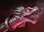

INHOUSE / 比赛事实档案
开局 2026-10-14 21:51:02 · 北京时间 · 36:49

比分取回放终局团队摘要，个人KDA保留逐人原值。终局净值不是实时经济曲线。未缓存图标的物品保留原生编号；物品按原生栏位顺序展示。归属来自管理员名单，不据昵称猜操作者。
团队终局比分与逐人击杀之和不同；两者原值分别保留，不自行补齐或解释原因。
部分逐人击杀/阵亡与原生播报计数不同，已保存差异。